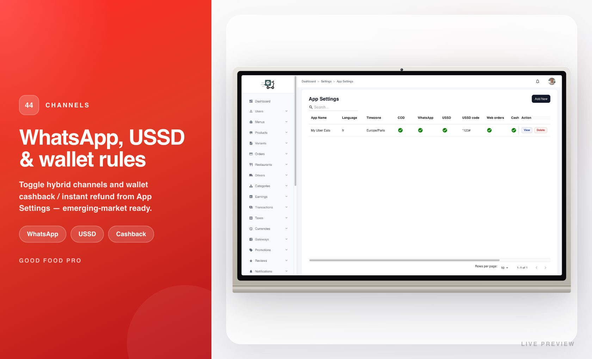

Market adaptability
Food delivery is local. Language, currency, how people pay, and how orders arrive at the kitchen all change from city to city. This platform is built so you can feel local without rewriting the product for every launch.
Speak the way your city speaks
Customers, drivers, restaurants, admin, and the API all ship with English, French, Spanish, and Arabic — including right-to-left layout where Arabic needs it. People switch language in settings; you are not stuck shipping an English-only demo to a bilingual market and apologizing later.
From admin you control which languages are active and which is the default. On phones, the experience follows the user’s choice so support chats and screenshots look native to each audience.

Languages you enable for the marketplace

Language picker in the customer experience
Price in the currency people expect
Display and reporting follow the currency you configure for the market. Menus, carts, wallets, and admin reports stay aligned — so a partner in another country does not see a currency that confuses checkout or tax conversations. Change the default when you expand; refresh the apps and the numbers tell the right story.

Hybrid channels, one order brain
Not every order starts in your mobile app. Some markets need counter, phone, or partner channels that still land in the same kitchen and courier flow. Channel configuration lets you describe how demand arrives while the shared order pipeline keeps status, earnings, and logistics consistent.
That matters when you sell to operators who already take walk-ins or WhatsApp orders and refuse to run two disconnected systems.

Channel options for how demand reaches the kitchen
Payments and wallet habits that fit the region
Card rails, regional PSPs, and wallet behaviours (cashback, smoother refunds) are part of feeling “local.” You can open markets where people prefer a familiar payment brand, and still keep a wallet that encourages repeat visits. Pair this with Monetization when you want the full money story — commissions, plans, ads, and gateways together.
Expand without starting from zero
Buyers who plan multi-city or multi-country rollouts look for language packs, currency control, and payment flexibility before they look at pixel-perfect icons. Market adaptability is the chapter that says: this is an operator platform, not a single-city toy.